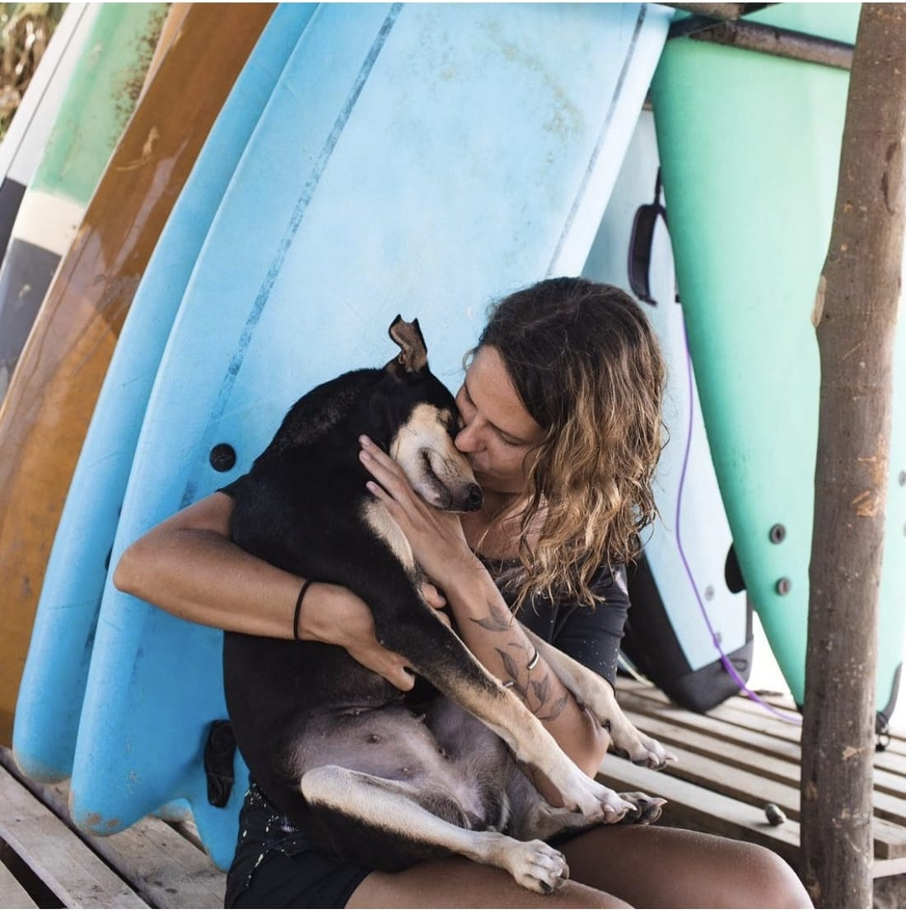
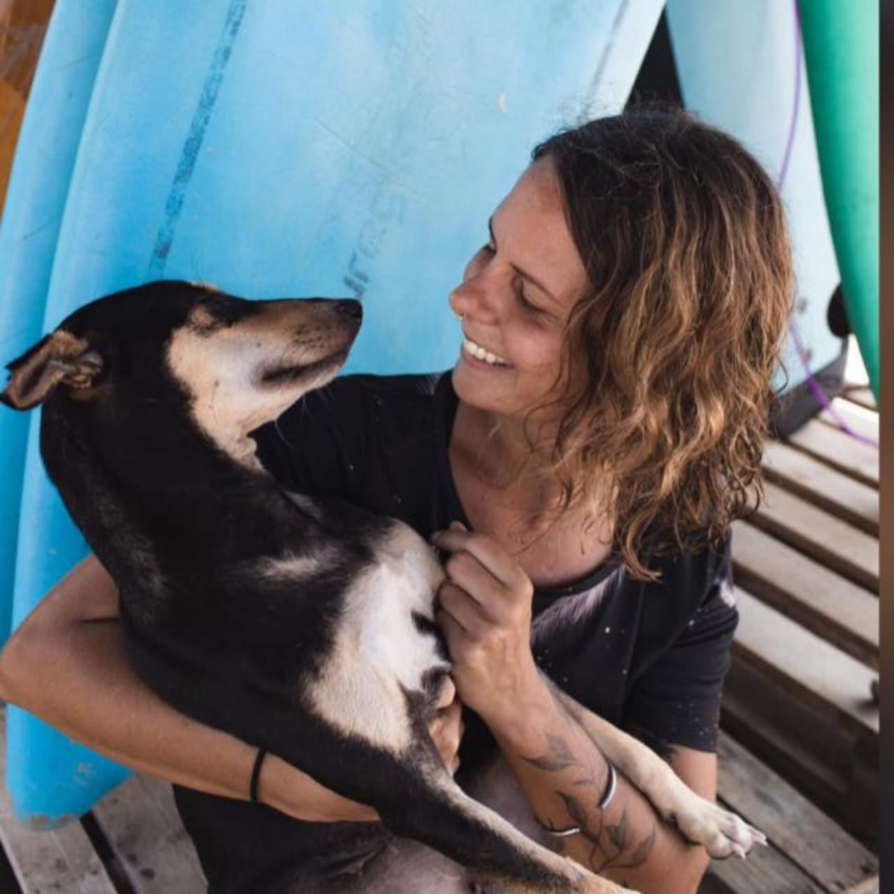
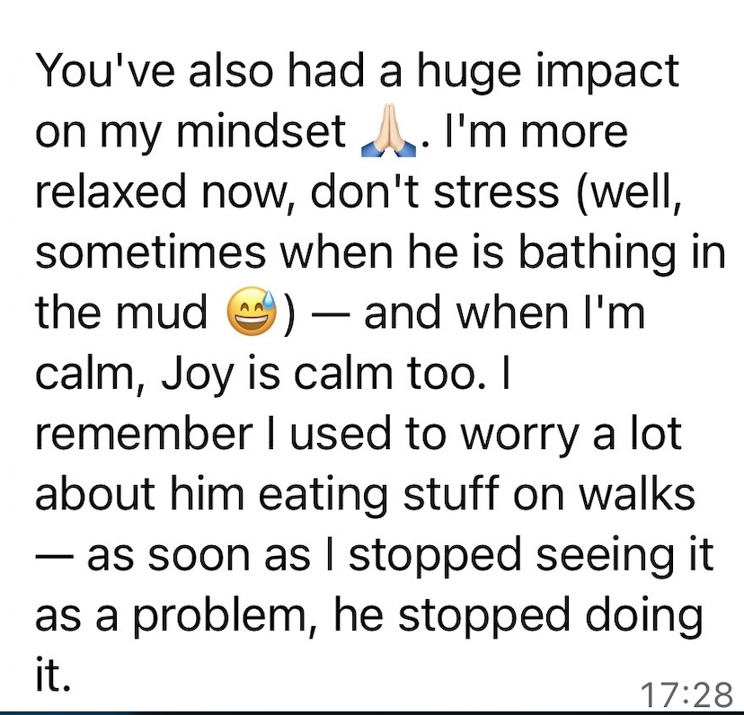
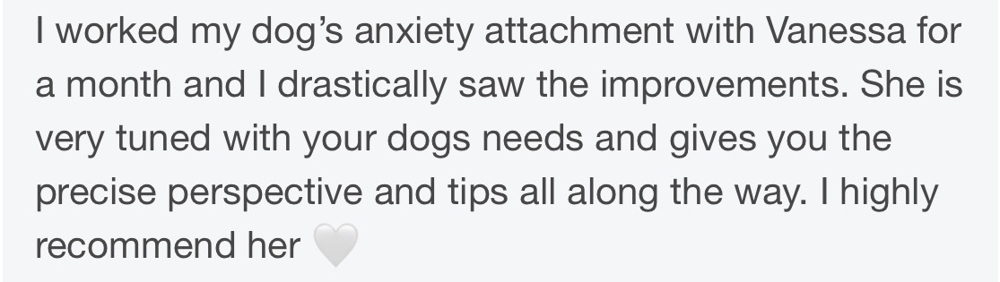
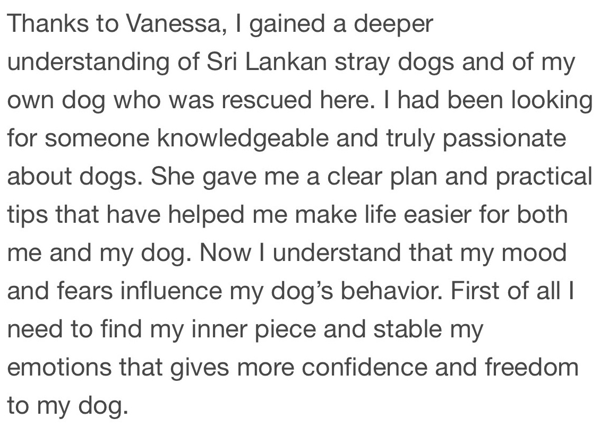

Behaviour support built around your dog.
We look at why the behaviour may be happening, what your dog is communicating, and what needs to change to make life easier for both of you. I have a particular focus on village, street and free-living dogs, as well as fearful, anxious and complex behaviour cases.

Free 15-minute Discovery Call
A free, no-commitment conversation to understand what’s happening, see whether we’re a good fit and work out which level of support makes the most sense for you and your dog.
Fill in the form
Tell me a little about your dog, what’s been happening and what kind of support you’re looking for.
Fill in the formBook your discovery call
Once you’ve completed the form, choose a time that works for you and book your free discovery call directly.
Have a question before booking? Message me on WhatsApp →
The Clarity Plan
“Help me understand my dog and know what to do next.”
For guardians who need clarity around their dog’s behaviour and a personalised direction to move forward.
- ✓ 75–90 minute in-depth video consultation
- ✓ Personalised written behaviour plan and recommendations
- ✓ Tailored strategies and relevant resources
- ✓ One 30-minute follow-up call
- ✓ 30 days of WhatsApp support
- ✓ Limited video review where it helps clarify behaviour
- ✓ Response within approximately 2–3 working days
The Transformation Journey
“Work with me over time to change a complex behavioural pattern.”
For complex, persistent or evolving cases that need more than a one-off consultation.
- ✓ 90–120 minute in-depth initial consultation
- ✓ Detailed, evolving behaviour plan
- ✓ Up to seven 30-minute follow-up calls across 12 weeks
- ✓ Flexible call timing according to the case
- ✓ 12 weeks of WhatsApp support
- ✓ Priority responses within approximately 24–48 hours on working days
- ✓ Ongoing video analysis
- ✓ Regular plan adjustments
- ✓ Active troubleshooting through setbacks or new developments
- ✓ Final review + longer-term roadmap
Which option is right for me?
| Clarity Plan — $250 / 1 month | Transformation Journey — $650 / 3 months | |
|---|---|---|
| Best for | Understanding behaviour + getting direction | Complex or persistent behaviour cases |
| Initial consultation | 75–90 min | 90–120 min |
| Written plan | Personalised recommendations | Detailed evolving behaviour plan |
| Follow-up calls | 1 × 30 min | Up to 7 × 30 min |
| WhatsApp support | 30 days | 12 weeks |
| Response time | 2–3 working days | Priority 24–48 hours on working days |
| Video review | Limited / as needed | Ongoing |
| Plan adjustments | Minor clarification | Ongoing adaptation |
| Setbacks / new developments | General guidance | Active troubleshooting |
| Final review | — | Final review + future roadmap |
Clarity Plan — $250 / 1 month
Transformation Journey — $650 / 3 months
Ongoing Support
For clients who have completed a main support package and want continued professional input while they maintain progress, navigate new challenges and keep adapting the plan as real life changes.
- ✓ One 30-minute check-in call at the beginning of the month
- ✓ One 30-minute review call at the end of the month
- ✓ WhatsApp support throughout the month for questions and troubleshooting
- ✓ Guidance and small adjustments to your existing behaviour plan where needed

Small shifts that change everyday life.
A few examples of what clients share back when understanding deepens, the relationship settles, and progress starts to feel real.



Start with the free discovery call.
There’s no commitment. We’ll talk through what’s happening, whether I’m the right person to help, and which option makes sense if you decide to continue.